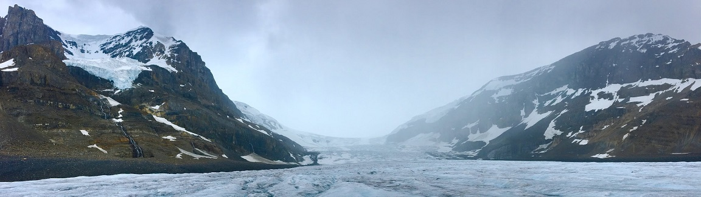

Melting Arctic
Climate change has hit the Arctic hard... What does this entail?
By Riel St. Amand
The Arctic Circle has been the focus of much climate change research, as it often sees the most dramatic effects. That being said, it is important to understand exactly what those effects are. Perhaps the first effect to examine would be temperature. In the Arctic, the average surface air temperature in 2019 was the second highest it's ever been since 1900 (119 years ago!). Knowing that, what does this rise in Arctic temperatures mean?
The Greenland Ice Sheet, among the largest in the world, is now losing 267 billion metric tons of ice... per year! Furthermore, sea ice thickness is decreasing year after year. This makes that ice more and more vulnerable to melting. This loss of ice contributes a measurable amount to sea level rise in the form of 0.7mm of sea level rise per year. Sea level rise can of course contribute to increased flooding and more extreme storms around the world, meaning that ice melting in the Arctic affects all of us. Meanwhile, snow cover in June of 2019 was the third lowest of the past 53 Junes. Of course, changes in the Arctic most directly affect the people who live there.
Fisheries in the Bering and Barents Seas have seen northern shifts in the species that they fish for. This makes it harder and harder each year for the communities that operate those fisheries to have access to those fish. Elders in those communites said to NOAA, "[i]n a warming Arctic, access to our subsistence foods is shrinking and becoming more hazardous to hunt and fish. At the same time, thawing permafrost and more frequent and higher storm surges increasingly threaten our homes, schools, airports, and utilities."
The thawing permafrost mentioned in that quote is more important to the rest of the world than you might think. Permafrost traps greenhouse gases such as carbon dioxide and methane, and the melting of permafrost can release those gases. In fact, melting permafrost is releasing 300-600 million tons of carbon into the atmosphere each year. Increased greenhouse gases in the atmosphere of course means even warmer temperatures, which melts more permafrost, and a positive feedback loop is formed.
All these changes have strong effetcs on Arctic wildlife. While polar bears have seen a dramatic and publicized decline, other creatures are seeing similar problems. One great example of this is the ivory gull. The ivory gull, a bird that lives in the Canadian Arctic, has seen a 70% decline in its breeding population since the 1980s.
So what does climate change mean for the Arctic? It means melting sea ice, thawing permafrost, damage to communities, and rising sea levels around the world. Changes in the Arctic can and will affect us all.
Source: Richter-Menge, J., M.L. Druckenmiller, and M. Jeffries, Eds., 2019: Arctic Report Card 2019, https://www.arctic.noaa.gov/Report-Card